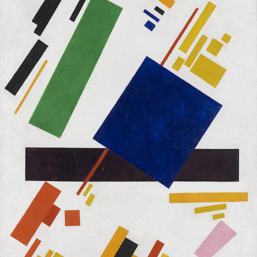
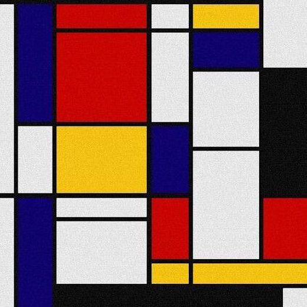
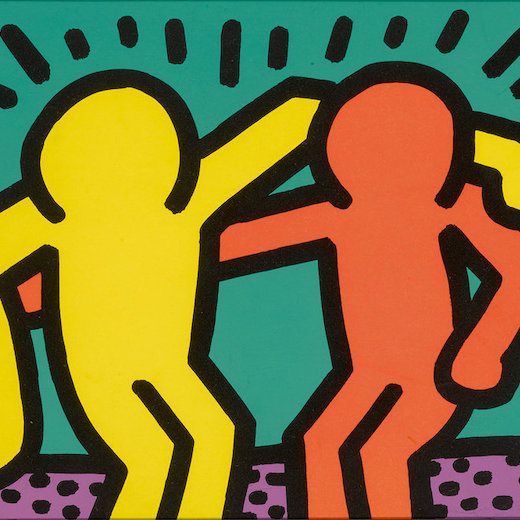
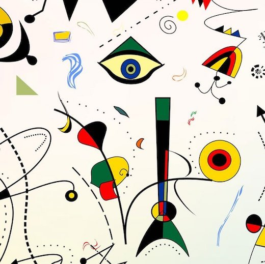
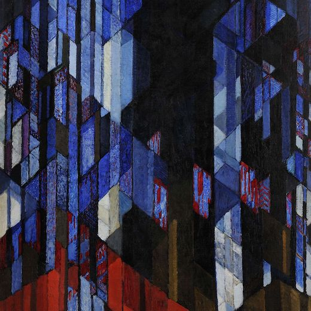
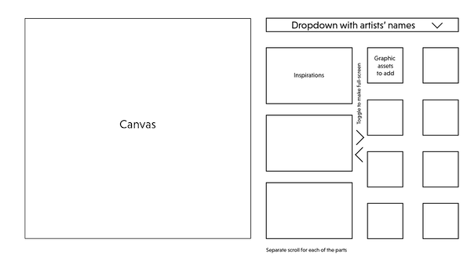

<prototype id="p5 photoshop museumStudies js ajax php" date="october-december2020"/>
see live or on
github >
Re-discover art through unexpected comparisons and contrasts.
The problem
How to make modern art seem less impalpable and artworks more memorable? As museums struggle to attract new audiences, there is a need for educational tools that reimagine how an artwork is presented and let the users develop individual relationships with monumental art. At the same time, these tools need to serve educational value, informing one’s understanding of modern art or a particular artist’s style or biography.
The solution
An experience that allows the user to put together elements of 20th-century art into a big ensemble. What is the better way to visualize the similarities and differences of art in the first and second half of the century? Interest someone in a particular artist through the aesthetics of their visual style?
The findings
Having started as a purely educational tool, “Mash up” seems to have grown into something that can be used for inspiration-searching. Pinterest mood board-style, many people have been finding aesthetics of incompatible and unobvious visual solutions through how collage elements were arranged, as well as new objects they formed.
The process
- Choosing 20th century artists whose works have enough similarities and differences for new discoveries by a user.
    
- Prototyping the interface. After originally trying to add three columns to let the user see the reference and collage elements at the same time, I have decided to go for a tabbing structure with the “Art elements” and “Learn and get inspired” panels. 
- Based on the user feedback, I decided to add a Backgrounds tab that would let them choose from multiple simple backgrounds to have a more cohesive look to the collages.
- I later upgraded the background feature to let the user upload their own image to collage upon, as I received the feedback that it would be easier to relate art pieces to personal context and see their real-world applicability if users could upload their one photographs or pop-culture images.
- Coding in the “Animate” feature that adds movement to collage elements and expands on the project’s philosophy of rapid juxtapositions because the elements start forming new compositions and coming in contact with one another. After the UX research, I also added a warning before the animation button is pressed that the collage’s current state will be altered.
- Adding a public image gallery via server-side technologies such as AJAX and PHP. The gallery is intended as a space for users to share their works and findings, and learn and get inspired from one another.
Space for growth
Outside of the art context where this project could be used as a regular teaching tool, especially for younger learners, this is a prototype of a marketing campaign for a museum and any other product that be easily split into separate visual components.